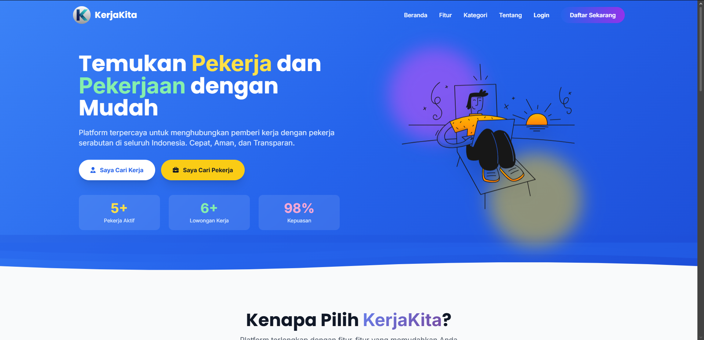
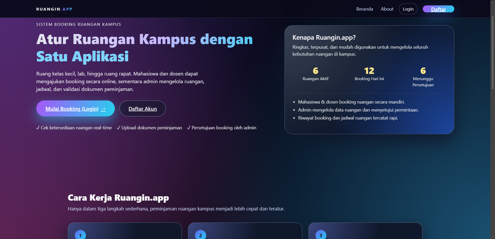
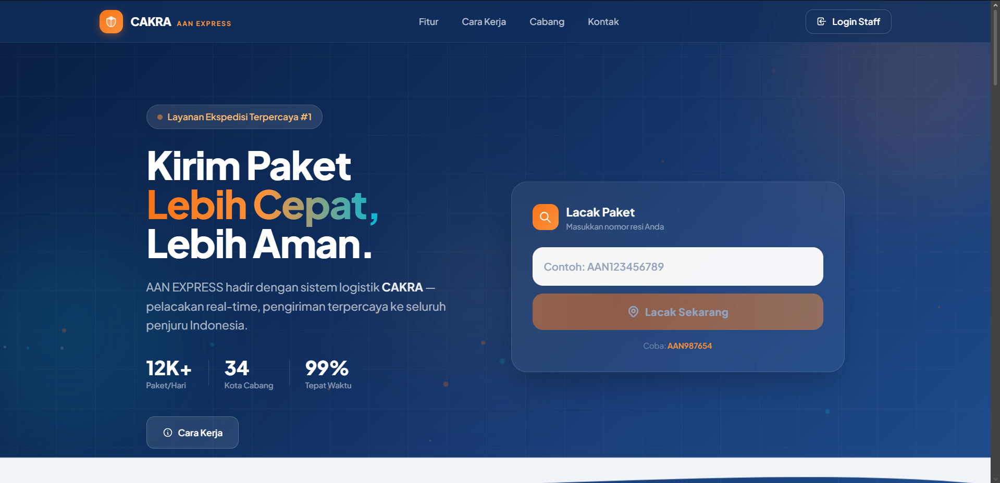

Alfansyah Rizky Wijaya
DATABASE ENGINEER
Tentang Saya
Halo! Saya Alfansyah Rizky Wijaya, mahasiswa Teknik Informatika angkatan 2023 di Universitas Komputer Indonesia (UNIKOM). Saya adalah seorang Database Engineer yang berfokus pada perancangan arsitektur data, optimasi kueri, dan pengelolaan sistem basis data yang efisien demi mendukung performa aplikasi yang cepat serta responsif.
Dalam pengembangan sistem, saya memiliki keahlian mendalam pada ekosistem basis data relasional (RDBMS) seperti MariaDB untuk menjaga integritas data yang ketat. Selain itu, saya juga menguasai database non-relasional (NoSQL) menggunakan MongoDB untuk menangani struktur data yang lebih fleksibel dan dinamis.
Saya terbiasa memegang kendali dalam pembuatan skema database (ERD), penulisan fungsi lanjutan (Stored Procedures & Triggers), hingga teknik pengindeksan (Indexing) untuk mempercepat waktu respons kueri. Dalam mengelola dan mengeksekusi seluruh operasi database tersebut, saya mengandalkan DBeaver sebagai universal database tool utama saya.
Sebagai seorang yang menekuni bidang IT, saya memiliki kapabilitas yang adaptif untuk berkontribusi pada berbagai lini pengembangan. Selain fokus utama pada manajemen basis data, saya juga mampu menyelaraskan kebutuhan arsitektur data dengan logika sistem backend maupun aspek teknis lainnya demi menghadirkan solusi digital yang optimal dan terintegrasi.
Pengalaman
Backend & Database Engineer (Tugas Besar)
2026CAKRA & KerjaKita
Mendesain skema Entity-Relationship Diagram (ERD), memelihara integritas data, dan mengintegrasikan solusi database relasional untuk aplikasi pelacakan pengiriman logistik serta platform marketplace lowongan kerja.
Database Designer (Tugas Besar)
2025Ruangin (Sistem Peminjaman Ruangan)
Merancang arsitektur basis data relasional untuk sistem peminjaman ruangan di lingkungan institusi, mengoptimalkan kueri dengan teknik indexing untuk memastikan ketersediaan ruangan yang responsif secara real-time.
Pendidikan
S1 Teknik Informatika
2023 - SekarangUniversitas Komputer Indonesia (UNIKOM)
Mempelajari interaksi manusia dan komputer (HCI), rekayasa perangkat lunak, dan teknologi perancangan antarmuka digital.
SMAN 4 Babelan
2020 - 2023Aktif sebagai siswa penjurusan MIPA dan mengikuti organisasi ROHIS.
SMPN 5 Bekasi
2017 - 2020Aktif mengikuti organisasi ROHIS dan Panahan.
Proyek & Karya

KerjaKita.App
Platform marketplace lowongan kerja (job portal) berbasis web menggunakan Laravel 12 untuk menghubungkan pemberi kerja dan pencari kerja.
 Laravel
Laravel
 MySQL
MySQL
 Tailwind CSS
Tailwind CSS

Ruangin
Platform web berbasis Laravel untuk mengotomatisasi sistem peminjaman ruangan di lingkungan institusi secara terorganisir dan transparan.
Laravel
 PHP
Tailwind CSS
PHP
Tailwind CSS

CAKRA
Aplikasi pelacakan pengiriman logistik untuk mengelola loket pendaftaran, penugasan kurir, pelacakan nomor resi, dan laporan pengiriman.
Laravel
PHP
MySQL
Tailwind CSS
Keahlian & Alat
 MariaDB
MariaDB
 MongoDB
MongoDB
 DBeaver
Laravel
PHP
DBeaver
Laravel
PHP
 GitHub
GitHub
Dokumen & CV
Curriculum Vitae (CV)
Dokumen PDF • Siap Unduh